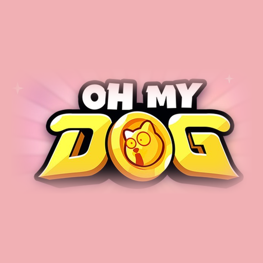
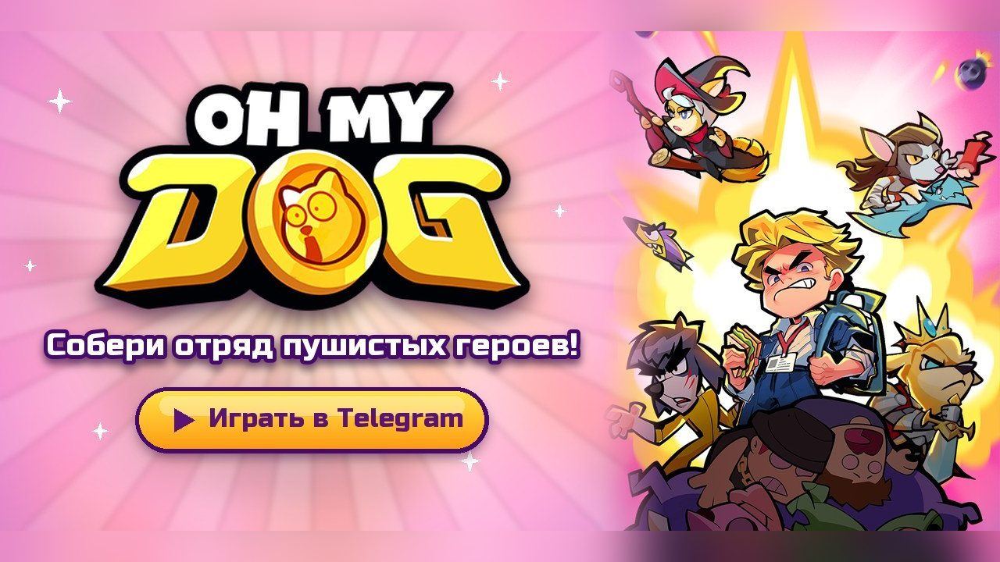
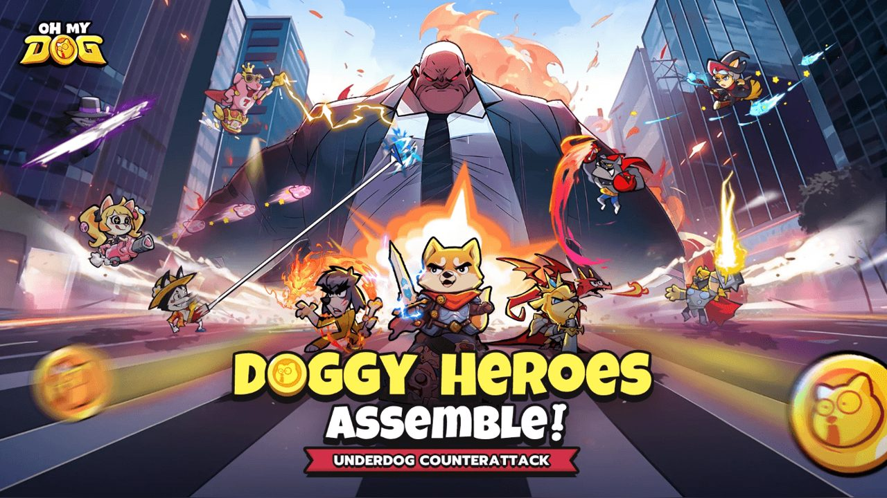
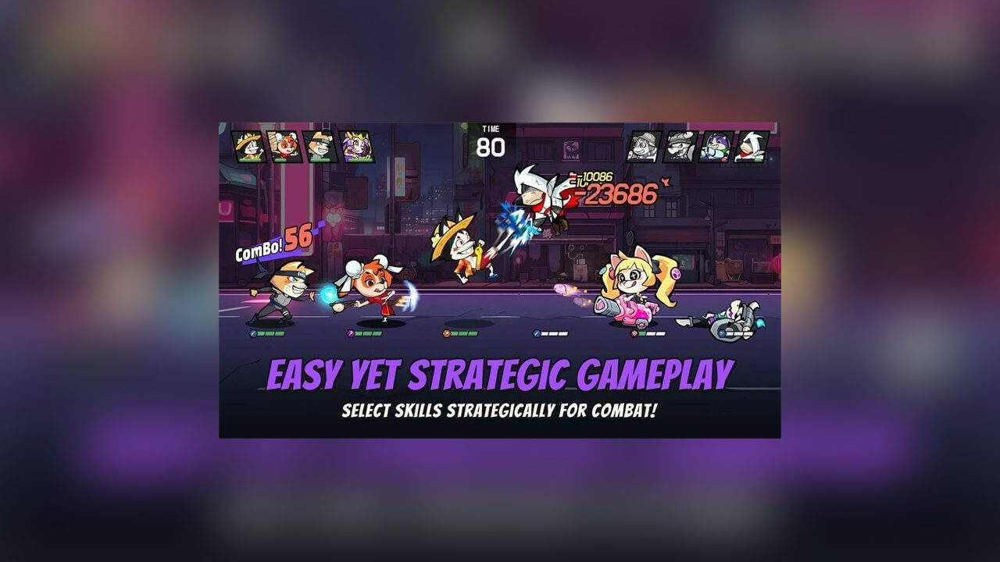
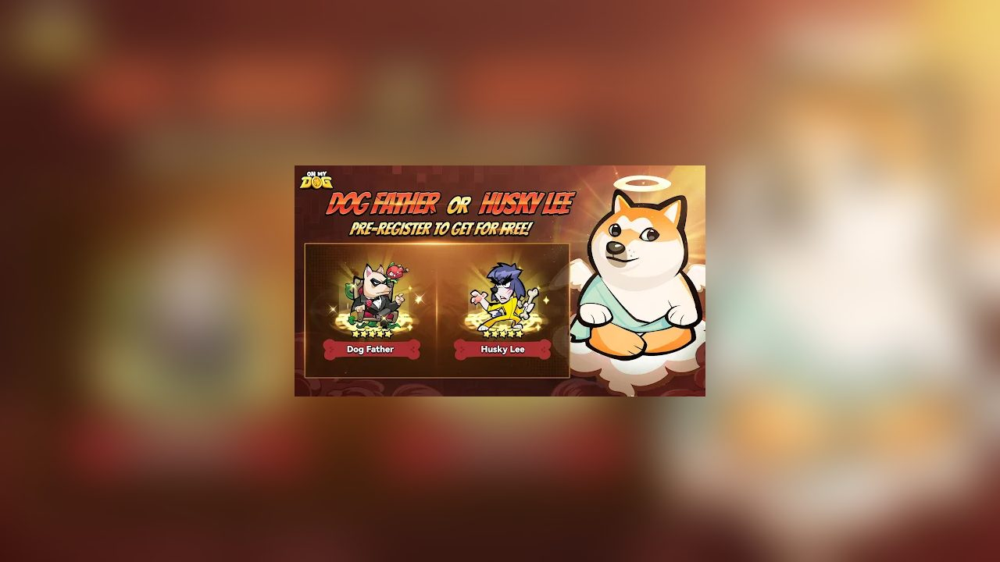
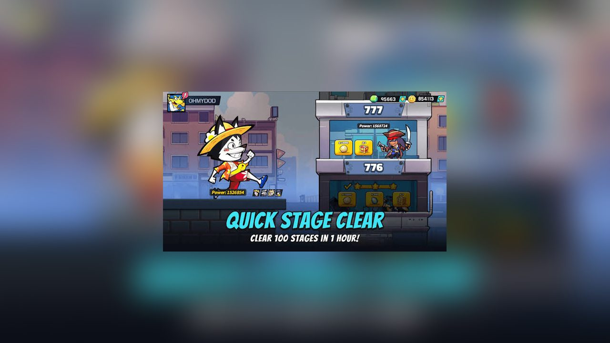
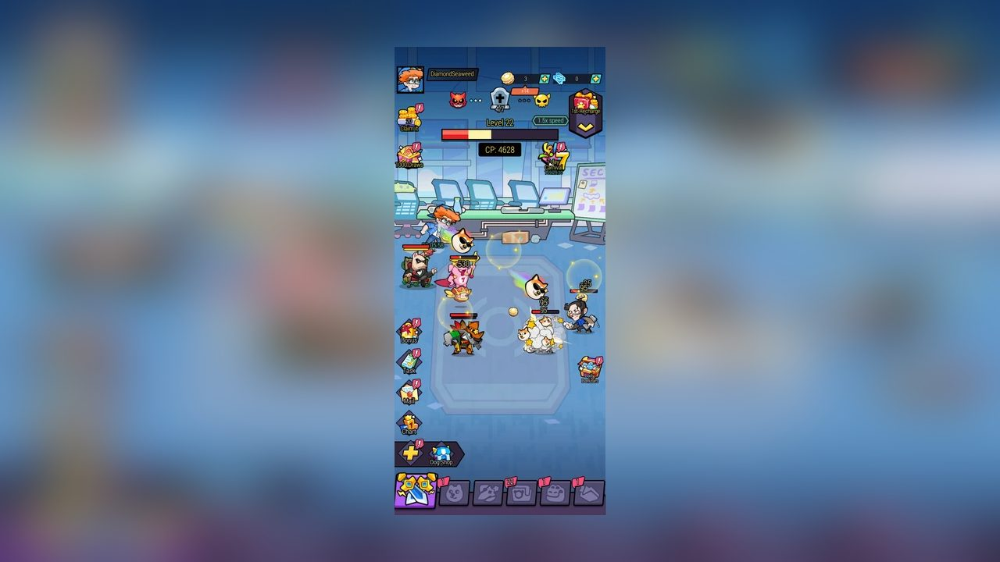
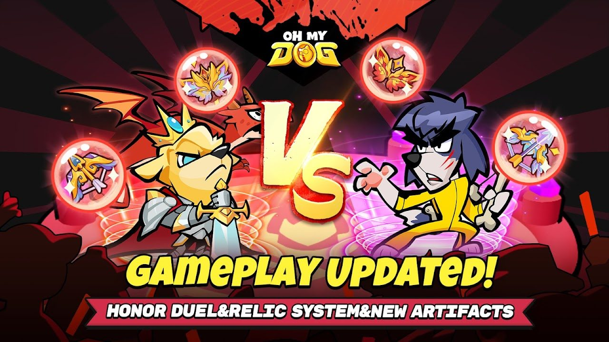
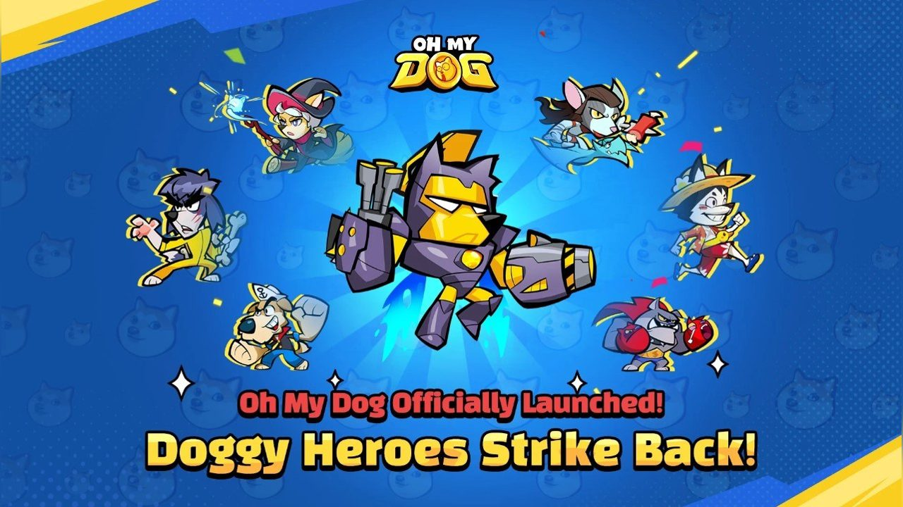

Бот: https://t.me/OhMyDogMobileBot
Сайт: https://ohmydog.gg

Знакомая картина: отчёт горит, начальник повышает голос, коллега тихо перекинул на тебя свою задачу. Именно из такого настроения родилась Oh My Dog! — бесплатная idle-RPG, которая работает прямо в Telegram. Ничего не надо скачивать из магазина и нигде регистрироваться: открываешь бота, жмёшь «Играть», и аккаунт создаётся сам, привязанный к твоему Telegram.
Ты — измотанный офисный работник. Когда терпеть уже нет сил, перед тобой появляется говорящий Собачий Бог и объявляет, что с задирами пора разобраться. Он призывает тебе от 50 до 100 собак-воинов, и каждая со своей внешностью, ролью в бою и способностями. Среди них есть, например, Dog Father и Husky Lee.

Это idle- и карточная RPG. Бои идут автоматически, а прогресс копится, даже когда ты офлайн. Всё самое интересное происходит до боя: кого поставить в отряд, чтобы роли дополняли друг друга, какую дать экипировку, каких питомцев закрепить за героями.


Играть можно и с телефона, и с компьютера — везде, где есть Telegram. Сессии короткие: зашёл, забрал награды, поменял состав и вернулся к делам. А позвать друга в альянс можно, просто отправив ему ссылку в чат.

Игра бесплатная. Сейчас для новых игроков идёт акция — 1000 бесплатных призывов. Игра есть на русском и английском языках.

Играть: https://t.me/OhMyDogMobileBot
Официальный сайт: https://ohmydog.gg

